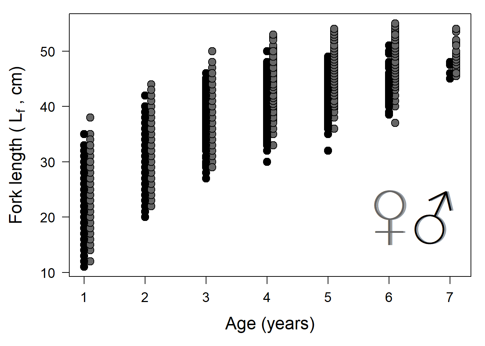

Data simulation and visualization

Introduction
The purpose of this unit is to get you comfortable simulating data in R and give you some tools for vizualizing the data that you have simulated or collected. This is not meant to be a comprehensive treatment of these subjects but rather an introduction to the tools that are available to you. Similarly, this is just meant to get you started. There are a lot of tools out there and you may come up with something that works better for you once you have some basics under your belt.
Why are we talking about simulating data?
There are a few good reasons for this:
Data simulation is a powerful tool in experimental design, and can help address problems before they arise.
Tools used for data simulation are similar or the same as many of the tools that you will need for manipulating and analyzing data.
Simulation can be as useful on the back end of statistical analyses as it is for experimental design. For example, we need to simulate data to make predictions in many cases.
And data visualization- why do we care?
There are few statistical tests that hold intuitive meaning to our readers. The ability to present information in a visually meaningful way to the reader can help to make the interpretation of your science crystal clear without having to worry about whether or not your reader has the faculties to interpret the results of statistical tests.
Effects and effect sizes are often (if not always) more important than the ability to detect ‘significant’ differences. If you can present clear evidence that some treatment or manipulation confers a biologically meaningful change in a visual way alongside these tests, you can provide a much stronger body of evidence with which to argue your case.
There are a few graphical tools that are very useful for basic data exploration, diagnostics, etc., that can make your life a lot easier for data analysis and interpretation. They can also help you decide whether something has gone terribly wrong.
Simulating data in R
There are a lot of tools specifically created for simulating data in R. We can’t even begin to cover them all, but we can build up a basic working knowledge of some of those that are more essential. This week we will look at some simple, common tools for basic data generation. Next week, we will extend this to include more on probability distributions.
There are a lot of different reasons why we might want to simulate data, from creating derived variables, to data organization, variable coding, power analyses, model predictions and validation, and ‘heuristic’ exercises.
Let’s start with some really simple functions in R.
We can simulate data in two ways: deterministically and stochastically.
Deterministic: this one is well defined. Here we are usually talking about assigning a variable based on some known characteristic or an error-free mathematical calculation.
Stochastic: this one is looser. Here we are usually talking about things like random number generation, subsampling, and a variety of other more advanced techniques. The objective usually is to incorporate some aspect of probability or uncertainty. This uncertainty can either be due to process error or observation error.
Process error is due to real ‘noise’ in a study system. It can, in itself, be a focus of very interesting research. A common source of process error in biological studies is individual variability (e.g., phenotypic variability).
Observation error can be thought of as ‘false’ noise in the study system that has been introduced due to our inability to perfectly observe some process of interest). This more commonly is thought of as a nuisance to be accounted for in many contemporary studies, but can also be an interesting field of inquiry in its own right. A common cause of observation error is imperfect detection of individuals or species in field surverys.
Deterministic simulation
By nature, deterministic simulation is inherently more boring than stochastic simulation, because relationships are known. This usually is manifested in the form of data manipulation, categorical or ordinal variable assignments, or calculation of derived quantities. We might also think of these simply as “transformations” of variables.
Data read
Let’s start by reading in a data file- this time we use real data. These are sex-specific length-at-age data for American shad (Alosa sapidissima) from the Connecticut River. The data currently are being used in some models that I maintain with collaborators from NOAA Fisheries, the US Geological Survey, and US Fish and Wildlife Service. The data were provided by CT Department of Energy and Environmental Protection and come from adult fish that are returning to the river from the ocean to spawn.
Always a good idea to look at the first few lines of data to make sure nothing looks ‘fishy’. Haha, I couldn’t help myself.
# Look at the first 10 rows
head(am_shad, 10)
Sex Age Length yearCollected backCalculated Mass
1 B 1 13 2010 TRUE NA
2 B 1 15 2010 TRUE NA
3 B 1 15 2010 TRUE NA
4 B 1 15 2010 TRUE NA
5 B 1 15 2010 TRUE NA
6 B 1 15 2010 TRUE NA
7 B 1 16 2010 TRUE NA
8 B 1 16 2010 TRUE NA
9 B 1 16 2010 TRUE NA
10 B 1 16 2010 TRUE NAThe NAs are supposed to be there- they are missing data.
# Look at the structure of the data
str(am_shad)
'data.frame': 16946 obs. of 6 variables:
$ Sex : Factor w/ 2 levels "B","R": 1 1 1 1 1 1 1 1 1 1 ...
$ Age : int 1 1 1 1 1 1 1 1 1 1 ...
$ Length : num 13 15 15 15 15 15 16 16 16 16 ...
$ yearCollected : int 2010 2010 2010 2010 2010 2010 2010 2010 2010 2010 ...
$ backCalculated: logi TRUE TRUE TRUE TRUE TRUE TRUE ...
$ Mass : int NA NA NA NA NA NA NA NA NA NA ...Data explanation (“metadata”):
There are about 17k observations (rows) of 6 variables here:
Sex: fish gender. B stands for ‘buck’ (males), R stands for ‘roes’ (females).
Age: an integer describing fish age.
Length: fish length at age (cm).
yearCollected: the year in which the fish was caught.
backCalculated: a logical indicating whether or not the length of the fish was back-calculated from aging.
Mass: the mass of indnividual fish (in grams). Note that this is NA for all ages that were estimated from hard structures (so all cases for which backCalculated == TRUE).
Example 1. Creation of new grouping variable based on some criterion
We could artificially classify fish into ‘big’ and ‘small’ groups if we wanted to for some reason. To do something like that, we have a couple of options
- Loop approach with conditional: despite some of the benefits, we try to avoid this approach in R for more purely vectorized solutions where possible, mostly because of performance issues.
Pros: pretty easy to understand the syntax and read.
Cons: extra code to write loops can be pretty slow in R.
# We define some iterator 'i' to run this for
# each row from 1 to the number of rows in our data.
for(i in 1:nrow(am_shad)){
# Then, we say that if length is
# greater than some threshold...
if(am_shad$Length[i] > 30){
# ...the length group is assigned the value 'big'...
am_shad$length_group[i] <- 'big'
# ...otherwise...
} else {
# ...length group is assigned the value 'small'
am_shad$length_group[i] <- 'small'
}
} # Close the loop- A faster method is to used vectorized logical tests. Note that this still creates the variable on the fly, and does the assignment much more quickly even though the code is somewhat redundant. But, it can be a little tougher to read at first.
am_shad$length_group[am_shad$Length <= 30] <- 'small'
am_shad$length_group[am_shad$Length > 30] <- 'big'A host of new(er) R functions are dedicated to doing this using the same vectorizations but with syntax that is a bit easier to read. I encourage you to explore those options as your skills build during this class.
Example 2. Derived quantity based on a mathematical formula.
If we have a formula that relates two variables, we could predict one based on the other deterministically.
For example, I have fit a length-weight regression to explain the relationship between Length and Mass using the am_shad data.
This relationship looks like your old friend \(y = mx + b\), the equation for a line, but we log10-transform both of the variables before fitting the line (more to come later in the class). For now, we can predict our independent variable (Mass) from our dependent variable (Length) if we plug in new values for Length and the parameters of the line.
In this case, I know that m = 3.0703621, and b = -1.9535405.
If I plug these numbers in to the equation above, I can predict log10(Mass) for new lengths log10(Length):
\(log_{10}Mass = 3.0703621 \cdot log_{10}Length - 1.9535405\)
In R, this looks like:
# Parameters from length-weight regression
m <- 3.0703621
b <- 1.9535405
# Make a sequence of new lengths based on range in data,
# then take the log of the whole thing all at once.
log_length <- log10(seq(min(am_shad$Length), max(am_shad$Length), 1))
# Calculate a new thing (log10_mass) using parameters for line
# and sequence of new log10_length.
log_mass <- m * log_length + b
# Plot the prediction
plot(x = log_length, y = log_mass, type = 'l')
Stochastic simulation
As mentioned above, the point of stochastic simulation is usually to account for uncertainty in some process (i.e. we could just pick a single value if we knew it). This is almost always done probabilistically. There are a number of ways we could do this. One is by drawing from some probability distribution that we have described, and the other is by randomly sampling data that we have (need for tools like ‘bootstrapping’).
Example 1. Random samples from a dataset
Let’s say we want to take random samples from our huge data set so we can fit models to a subset of data and then use the rest of our data for model validation
# Randomly sample 100 rows of data from our data frame two different
# times to see the differences
samp1 <- am_shad[sample(nrow(am_shad), size=100, replace=FALSE), ]
samp2 <- am_shad[sample(nrow(am_shad), size=100, replace=FALSE), ]
# We can look at them with our histograms
par(mfrow = c(1,2))
hist(samp1$Length, main = '', ylim=c(0,30))
hist(samp2$Length, main = '', ylim=c(0,30))
We could also loop this to get a dynamic look at what our sampling does. Note: change the size of the sample (‘n’ below) and you can see the effect of sample size on the shape of the distribution we assume.
We’ll modify our histogram now, as well.
Example 2. Random samples from a distribution
Now, instead of sampling our data let’s say we have some distribution from which we would like to use information
Let’s make a distribution.
We will start with the normal, and we can move into others next week when we talk about probability distributions and sample statistics. For this, we will use the distribution of American shad lengths for age-6 females because it approximates a normal distribution: Notice that we are adding more and more complexity into our histogram code!
Start by looking at the size distribution for age-7 females:
hist(am_shad$Length[am_shad$Sex=='R' & am_shad$Age==6],
col='gray',
main='',
xlab='Forklength (cm)'
)
Let’s make that query into an object now, and we
# Make a new object with our fish
age6_Roes <- am_shad$Length[am_shad$Sex=='R' & am_shad$Age==6]
# Get the mean and variance
mu <- mean(age6_Roes)
sigma <- sd(age6_Roes)Quick aside:
We will get into this next week, but for now it may be helpful to know that a normal distribution is described by two parameters:
- The mean (\(\mu\))
- The standard deviation (\(\sigma\), or the variance as \(\sigma^2\)).
Back to our example
# Now, we can use the mean and
# standard deviation to randomly sample
# our normal distribution of lengths.
length_sample <- rnorm(n=10000, mean=mu, sd=sigma)
# Plot the sample to see if it is a normal- YAY it is!
hist(length_sample,
col='gray',
main='',
xlab='Forklength (cm)'
)
And, just as a check to make sure this is accurate, let’s go ahead and plot our new distribution over the top of the histogram of our original data Note: we will look at how to modify these plots below, just run the code for now.
par(mar=c(5,5,5,5))
hist(am_shad$Length[am_shad$Sex=='R' & am_shad$Age==6],
col='gray',
main='',
xlab='Forklength (cm)',
xlim=c(0,60)
)
par(new=TRUE)
plot(density(length_sample),
xlim=c(0,60),
yaxt='n',
main='',
ylab='',
xlab='')
axis(4, las=2)
Some simple graphs in R
Let’s look at a few simple kinds of plots in R. The basic graphics in R are not much to look at. But, there are a ton of ways to modify these plots, and there are even whole packages like ggplot that are dedicated to improving data visualization in R.
Histograms
First, let’s come back to our histogram. The function hist plots the actual histogram, and like other plotting utilities, can take a wide variety of arguments, all of which are optional with the exception of the data that we want to plot. This is the case for most plotting functions in the base graphics for R.
# Get data for age six females, and make a histogram
lengths <- am_shad$Length[am_shad$Sex=='R' & am_shad$Age==6]
hist(lengths) 
This is really ugly, but easy enough to fix. Have a look at what everything is doing in the code below.
# Par is a function that controls graphical parameters in the active
# graphics device. Here, we are using it to set the margin widths outside
# the plotting area (with the argument 'mar'). Take a look at the graphical
# parameters available in R by using ?par
par(mar=c(5,5,1,1))
# Let's break down the histogram function
hist(
lengths, # Data that we want to use for histogram
col='gray', # Fill color (different for different plot type)
main='', # Title for graph, I tend to leave blank
xlab='Forklength (cm)', # x-axis label, a character string
xlim=c(0,60), # Limits of x-axis as min and max
yaxt='n', # y-axis display- none in this case- see others
xaxt='n' # Same
)
# We can make the axes look a lot better if we just place them by hand
# The 'axis' funcction let's us draw axes on sides 1(bottom), 2(left),
# 3(top), and 4(right)
axis(
side=2, # Left side
las=2, # Rotate so numbers are horizontal
pos=0 # Position the axis at zero instead of negative buffer
)
# And now for a nice x-axis
axis(
side=1,
pos=0,
at=seq(from=0, to=60, by=10), # We can tell R where to put ticks
labels=seq(from=0, to=60, by=10) # And add labels (can be different!)
)
Much better, right?
Scatter plots
Now let’s make a scatter plot:
# Data screening - get rid of bad lengths
shad <- am_shad[am_shad$Length > 10, ]
# Start with a simple scatterplot of age on length
plot(x=shad$Age, y=shad$Length)
Ugly!!
So, let’s make it a little nicer.
# First, let's make a new column to hold age
shad$Age2 <- shad$Age
# Now, we will add a small number to the age of roes to offset the points
# in our graph so things are clearer. Note that 'ggplot2' has built in
# functions for this, and you may prefer them; just remember that the more
# you rely on packages like that, the more you sacrifice the freedom
# inherent in using base functions in R for things like data visualization
shad$Age2[shad$Sex=='R'] <- shad$Age2[shad$Sex=='R'] +.1
# Make the plot
par(mar=c(5,5,1,1)) # Notice that we are shrinking top and right marg.
plot(x=shad$Age2, # Variable to be plotted on x-axis (independent)
y=shad$Length, # Variable to be plotted on y-axis (dependent)
pch = c(21,21), # Change the point type (google 'pch r' for lists)
col = 'black', # Black outlines for our circles
bg = c('black', 'gray40')[shad$Sex], # Sex-specific fills
xlab = 'Age (years)', # X-axis label
yaxt = 'n', # Don't plot y-axis, we'll make one
ylab = '', # No y-axis label, let's make it cool (ok, nerdy),
cex = 1.5, # Make the points big- be proud of your data!
cex.axis = 1.15, # Magnification for font on tick mark labels
cex.lab = 1.5 # Magnification for x-lab, slightly larger to show
) # Close call to plot
# Y-axis
axis(side = 2, # Axis goes on the left side (#2)
las=2, # Rotate by 90 degrees
cex.axis=1.15 # Magnification to match call to plot
)
# Y-axis label: look what's going on below!
# mtext lets us plot text in the margins of each axis
mtext(
# Side refers to the side of the plotting area, 1 to 4 from top to
# right counter clockwise
side=2,
# 'expression' let's us include all kinds of special formatting like
# the subscript in the example below, but also superscripts, and
# special characters like interpuncts, Greek letters, etc. It can be
# a lot of fun for making super nerdy axes for your graphs and very
# powerful in terms of freedom in the range of options you have. Note
# that special characters usually require the UTF-8 code for a symbol.
# For example, if you wanted the interpunct, it would be entered in
# the paste statement as '\u00b7'.
expression(
paste( # Paste concatenates chr strings in order
'Fork length ( ', # First character string- note spaces matter!
"L"["f"], # Second, square brackets mean 'subscript'
" , cm)", # Third, spaces count!
# Tell R you want no characters to seperate your text strings
# listed above
sep=''
) # Close call to paste
), # Close call to expression
cex = 1.5, # Magnification to match x-axis label above
line = 3 # Tell R what vertical line WRT to ordinate
) # Close call to mtext
# And, just because R is AWESOME and we want to start unleashing the
# darkside of the force, let's add a sweet graphical legend!
# Sweet female digraph in dark gray with light gray shadow
text(x=6.04, y=19.97, "\u2640", cex=5, col='gray60')
text(x=6.01, y=19.99, "\u2640", cex=5, col='gray40')
text(x=6, y=20, "\u2640", cex=5, col='gray40')
# Sweet male digraph in black with dark gray shadow
text(x=6.76, y=19.97, "\u2642", cex=5, col='gray60')
text(x=6.73, y=19.99, "\u2642", cex=5, col='black')
text(x=6.72, y=20, "\u2642", cex=5, col='black') 
Okay, okay, that’s a little overkill, but hopefully it helps you appreciate what you can do when you know how to use the program. We will continue to explore this functionality and more as we work through the course.
This work is licensed under a Creative Commons Attribution 4.0 International License. Data are provided for educational purposes only unless otherwise noted.